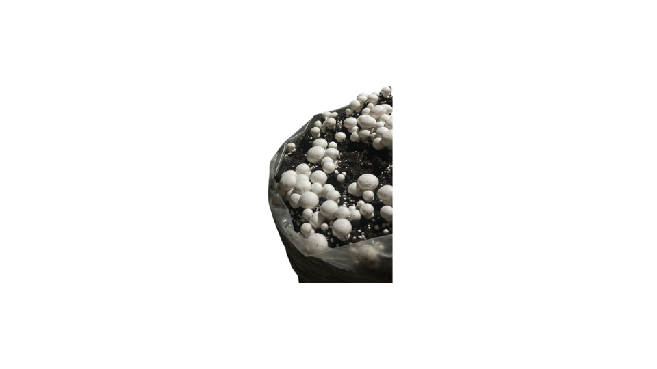
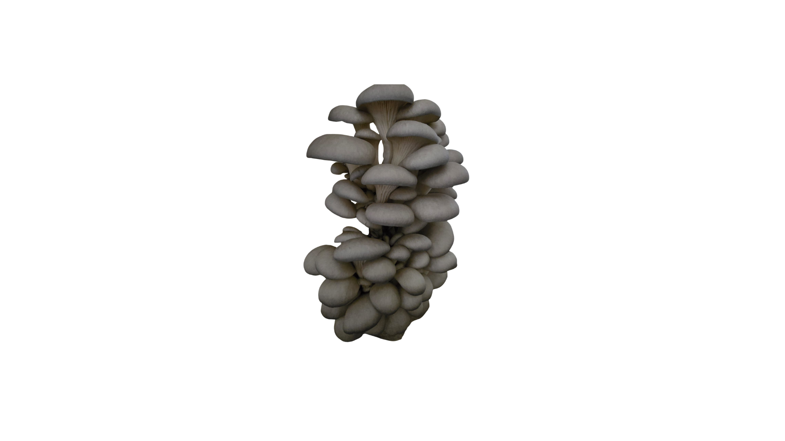

Lo que cultivamos
Nuestros productos
Frescos, limpios y llenos de vida. Del sustrato a tu cocina.

DisponibleChampiñón Blanco
Agaricus bisporus
Textura firme, sabor suave y versátil. Perfecto para sopas, salteados, risottos y todo lo que tu creatividad imagine.

DisponibleOrellana
Pleurotus ostreatus
De sabor complejo, casi aterciopelado. Una joya culinaria que crece en cascadas elegantes sobre nuestro sustrato de bagazo.
 Próximamente
Próximamente
Encurtidos Artesanales
Procesados — Línea Conservas
Frascos de champiñones preservados con ingredientes orgánicos. Sabor que dura, sin conservantes artificiales.
 Próximamente
Próximamente
Champiñón Deshidratado
Procesados — Línea Seco
Concentrado de sabor, listo para reconstituir. Ideal para cocinas profesionales y hogares que buscan intensidad.